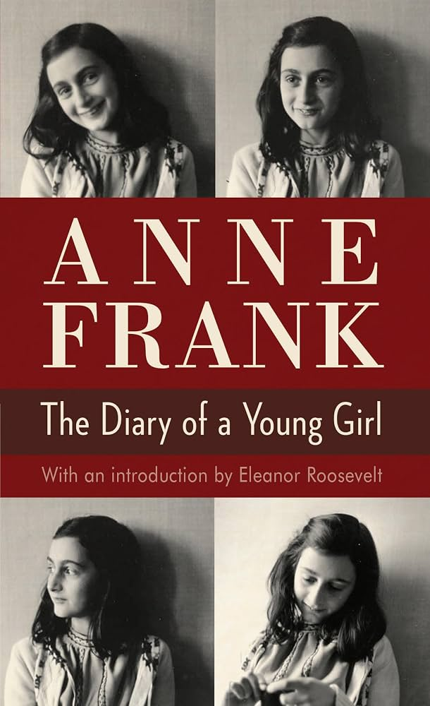

Summary
My favorite part about the book, “The Diary of Anne Frank" was how realistic her descriptions of life in hiding sounded. Even though she was hiding in a secret attic during World War 2, she still wrote about regular teenage problems like arguing with her mom, and feeling misunderstood. It is impressive how she stayed so positive and still believed people were good, even when other Jewish people like her were being prosecuted by the Nazis. Her diary didn't just feel like a boring history lesson, it felt like reading text messages from a real actual friend. I think that I would be a lot more scared, if I were in her position.
What I Learned:
I learned that having a pet can cheer you up, even when a war is going on and you have to hide. If I were in her position then I would be sad, because I couldn't just walk around or play sports.
My Rating
⭐⭐⭐⭐
Favorite Quote
"but thats impossible, I am stuck with the character I was born with, and yet i'm sure i'm not a bad person."(p89)← Back to My Library